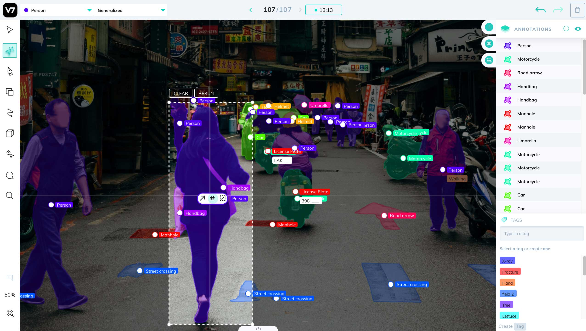

V7 Integration ¶¶
V7 is one of the leading image and video annotation tools available, and we’ve made it easy to upload your data directly from FiftyOne to V7 for labeling.
Create a V7 account and follow these simple setup instructions to get up and running.
Note
Did you know? You can request, manage, and import annotations from within the FiftyOne App by installing the @voxel51/annotation plugin!
FiftyOne provides an API to upload data, define label schemas, and download annotations using V7, all programmatically in Python. All of the following label types are supported, for both image and video datasets:

Basic recipe ¶¶
The basic workflow to use V7 to add or edit labels on your FiftyOne datasets is as follows:
-
Load a labeled or unlabeled dataset into FiftyOne
-
Explore the dataset using the App or dataset views to locate either unlabeled samples that you wish to annotate or labeled samples whose annotations you want to edit
-
Use the
annotate()method on your dataset or view to upload the samples and optionally their existing labels to V7 by setting the parameterbackend="darwin" -
In V7, perform the necessary annotation work
-
Back in FiftyOne, load your dataset and use the
load_annotations()method to merge the annotations back into your FiftyOne dataset -
If desired, delete the V7 project and the record of the annotation run from your FiftyOne dataset
The example below demonstrates this workflow.
Note
You must create an account at https://www.v7labs.com/sign-up and follow the simple setup instructions in this section in order to run this example.
First, we create the annotation tasks in V7:
import fiftyone as fo
import fiftyone.zoo as foz
from fiftyone import ViewField as F
# Step 1: Load your data into FiftyOne
dataset = foz.load_zoo_dataset(
"quickstart", dataset_name="v7-annotation-example"
)
dataset.persistent = True
dataset.evaluate_detections(
"predictions", gt_field="ground_truth", eval_key="eval"
)
# Step 2: Locate a subset of your data requiring annotation
# Create a view that contains only high confidence false positive model
# predictions, with samples containing the most false positives first
most_fp_view = (
dataset
.filter_labels("predictions", (F("confidence") > 0.8) & (F("eval") == "fp"))
.sort_by(F("predictions.detections").length(), reverse=True)
)
# Retrieve the sample with the most high confidence false positives
sample_id = most_fp_view.first().id
view = dataset.select(sample_id)
# Step 3: Send samples to V7
# A unique identifier for this run
anno_key = "v7_basic_recipe"
label_schema = {
"new_ground_truth": {
"type": "detections",
"classes": dataset.distinct("ground_truth.detections.label"),
},
}
view.annotate(
anno_key,
backend="darwin",
label_schema=label_schema,
launch_editor=True,
dataset_slug=anno_key,
)
print(dataset.get_annotation_info(anno_key))
# Step 4: Perform annotation in V7 and save the tasks
Then, once the annotation work is complete, we merge the annotations back into FiftyOne:
import fiftyone as fo
anno_key = "v7_basic_recipe"
# Step 5: Merge annotations back into FiftyOne dataset
dataset = fo.load_dataset("v7-annotation-example")
dataset.load_annotations(anno_key)
# Load the view that was annotated in the App
view = dataset.load_annotation_view(anno_key)
session = fo.launch_app(view=view)
# Step 6: Cleanup
# Delete tasks from V7
results = dataset.load_annotation_results(anno_key)
results.cleanup()
# Delete run record (not the labels) from FiftyOne
dataset.delete_annotation_run(anno_key)
Note
See this section to see a variety of common V7 annotation patterns.
Setup ¶¶
You can get started with V7 by creating an account and downloading an API key.
Installing the V7 backend ¶¶
In order to use the V7 backend, you must install the darwin_fiftyone Python
package:
pip install darwin_fiftyone
and register the darwin backend with FiftyOne, which you can do either by
setting the following environment variables:
export FIFTYONE_ANNOTATION_BACKENDS=*,darwin
export FIFTYONE_DARWIN_CONFIG_CLS=darwin_fiftyone.DarwinBackendConfig
export FIFTYONE_DARWIN_API_KEY=XXXXXXXXX
or by adding the following parameters to your
annotation config located at
~/.fiftyone/annotation_config.json:
{
"backends": {
"darwin": {
"config_cls": "darwin_fiftyone.DarwinBackendConfig",
"api_key": "XXXXXXXXX"
}
}
}
Note that this file may not exist if you haven’t previously customized your annotation backends.
Using the V7 backend ¶¶
By default, calling
annotate() will
use the CVAT backend.
To use the V7 backend, simply set the optional backend parameter of
annotate() to
"darwin":
view.annotate(anno_key, backend="darwin", ...)
Alternatively, you can permanently configure FiftyOne to use the V7 backend by
setting the FIFTYONE_ANNOTATION_DEFAULT_BACKEND environment variable:
export FIFTYONE_ANNOTATION_DEFAULT_BACKEND=darwin
or by setting the default_backend parameter of your
annotation config located at
~/.fiftyone/annotation_config.json:
{
"default_backend": "darwin"
}
Authentication ¶¶
In order to connect to V7, you must provide your API key, which can be done in a variety of ways.
Environment variables (recommended)
The recommended way to configure your V7 API key is to store it in the
FIFTYONE_DARWIN_API_KEY environment variable. This is automatically accessed
by FiftyOne whenever a connection to V7 is made.
export FIFTYONE_DARWIN_API_KEY=...
FiftyOne annotation config
You can also store your credentials in your
annotation config located at
~/.fiftyone/annotation_config.json:
{
"backends": {
"darwin": {
"api_key": ...,
}
}
}
Note that this file will not exist until you create it.
Keyword arguments
You can manually provide your API key as a keyword argument each time you call
methods like
annotate() and
load_annotations()
that require connections to V7:
view.annotate(
anno_key,
backend="darwin",
label_field="ground_truth",
dataset_slug=anno_key,
api_key=...,
)
Requesting annotations ¶¶
Use the
annotate() method
to send the samples and optionally existing labels in a Dataset or
DatasetView to V7 for annotation.
The basic syntax is:
anno_key = "..."
view.annotate(anno_key, backend="darwin", ...)
The anno_key argument defines a unique identifier for the annotation run, and
you will provide it to methods like
load_annotations(),
get_annotation_info(),
load_annotation_results(),
rename_annotation_run(), and
delete_annotation_run()
to manage the run in the future.
Note
Calling
annotate()
will upload the source media files to the V7 server.
In addition,
annotate()
provides various parameters that you can use to customize the annotation tasks
that you wish to be performed.
The following parameters are supported by all annotation backends:
-
backend ( None): the annotation backend to use. Use
"darwin"for the V7 backend. The supported values arefiftyone.annotation_config.backends.keys()and the default isfiftyone.annotation_config.default_backend -
media_field ( “filepath”): the sample field containing the path to the source media to upload
-
launch_editor ( False): whether to launch the annotation backend’s editor after uploading the samples
The following parameters allow you to configure the labeling schema to use for your annotation tasks. See this section for more details:
-
label_schema ( None): a dictionary defining the label schema to use. If this argument is provided, it takes precedence over
label_fieldandlabel_type -
label_field ( None): a string indicating a new or existing label field to annotate
-
label_type ( None): a string indicating the type of labels to annotate. The possible label types are:
-
"classification": a single classification stored inClassificationfields -
"classifications": multilabel classifications stored inClassificationsfields -
"detections": object detections stored inDetectionsfields -
"polygons": polygons stored inPolylinesfields with theirfilledattributes set toTrue -
"keypoints": keypoints stored inKeypointsfields
All new label fields must have their type specified via this argument or in
label_schema
-
classes ( None): a list of strings indicating the class options for
label_fieldor all fields inlabel_schemawithout classes specified. All new label fields must have a class list provided via one of the supported methods. For existing label fields, if classes are not provided by this argument norlabel_schema, the observed labels on your dataset are used -
allow_additions ( True): whether to allow new labels to be added. Only applicable when editing existing label fields
-
allow_deletions ( True): whether to allow labels to be deleted. Only applicable when editing existing label fields
-
allow_label_edits ( True): whether to allow the
labelattribute of existing labels to be modified. Only applicable when editing existing fields withlabelattributes -
allow_spatial_edits ( True): whether to allow edits to the spatial properties (bounding boxes, vertices, keypoints, etc) of labels. Only applicable when editing existing spatial label fields
In addition, the following V7-specific parameters can also be provided:
-
dataset_slug ( None): the name of the dataset to use or create in Darwin. This is currently mandatory
-
external_storage ( None): the sluggified name of a Darwin external storage to use. If provided, indicates that all files should be treated as external storage
Label schema ¶¶
The label_schema, label_field, label_type, and classes parameters to
annotate() allow
you to define the annotation schema that you wish to be used.
The label schema may define new label field(s) that you wish to populate, and it may also include existing label field(s), in which case you can add, delete, or edit the existing labels on your FiftyOne dataset.
The label_schema argument is the most flexible way to define how to construct
tasks in V7. In its most verbose form, it is a dictionary that defines
the label type, annotation type, and possible classes for each label field:
anno_key = "..."
label_schema = {
"new_field": {
"type": "classifications",
"classes": ["class1", "class2"],
},
}
dataset.annotate(
anno_key,
backend="darwin",
label_schema=label_schema,
dataset_slug="dataset_slug",
)
Alternatively, if you are only editing or creating a single label field, you
can use the label_field, label_type, and classes parameters to specify
the components of the label schema individually:
anno_key = "..."
label_field = "new_field",
label_type = "classifications"
classes = ["class1", "class2"]
dataset.annotate(
anno_key,
backend="darwin",
label_field=label_field,
label_type=label_type,
classes=classes,
dataset_slug="dataset_slug",
)
When you are annotating existing label fields, you can omit some of these
parameters from
annotate(), as
FiftyOne can infer the appropriate values to use:
-
label_type: if omitted, the
Labeltype of the field will be used to infer the appropriate value for this parameter -
classes: if omitted, the observed labels on your dataset will be used to construct a classes list
Warning
Annotating multiple fields is not yet supported by the darwin backend.
Please check back soon!
Label attributes ¶¶
Warning
Label attributes are not yet supported by the darwin backend. Please
check back soon!
Loading annotations ¶¶
After your annotations tasks in the annotation backend are complete, you can
use the
load_annotations()
method to download them and merge them back into your FiftyOne dataset.
view.load_annotations(anno_key)
The anno_key parameter is the unique identifier for the annotation run that
you provided when calling
annotate(). You
can use
list_annotation_runs()
to see the available keys on a dataset.
Note
By default, calling
load_annotations()
will not delete any information for the run from the annotation backend.
However, you can pass cleanup=True to delete the V7 dataset associated
with the run after the annotations are downloaded.
Warning
The dest_field parameter of
load_annotations()
is not yet supported by the darwin backend. Check back soon!
Managing annotation runs ¶¶
FiftyOne provides a variety of methods that you can use to manage in-progress or completed annotation runs.
For example, you can call
list_annotation_runs()
to see the available annotation keys on a dataset:
dataset.list_annotation_runs()
Or, you can use
get_annotation_info()
to retrieve information about the configuration of an annotation run:
info = dataset.get_annotation_info(anno_key)
print(info)
Use load_annotation_results()
to load the AnnotationResults
instance for an annotation run.
All results objects provide a cleanup()
method that you can use to delete all information associated with a run from
the annotation backend.
results = dataset.load_annotation_results(anno_key)
results.cleanup()
You can use
rename_annotation_run()
to rename the annotation key associated with an existing annotation run:
dataset.rename_annotation_run(anno_key, new_anno_key)
Finally, you can use
delete_annotation_run()
to delete the record of an annotation run from your FiftyOne dataset:
dataset.delete_annotation_run(anno_key)
Note
Calling
delete_annotation_run()
only deletes the record of the annotation run from your FiftyOne
dataset; it will not delete any annotations loaded onto your dataset via
load_annotations(),
nor will it delete any associated information from the annotation backend.
Examples ¶¶
This section demonstrates how to perform some common annotation workflows on a FiftyOne dataset using the V7 backend.
Note
All of the examples below assume you have configured your V7 backend as described in this section.
Adding new label fields ¶¶
In order to annotate a new label field, you can provide the label_field,
label_type, and classes parameters to
annotate() to
define the annotation schema for the field:
import fiftyone as fo
import fiftyone.zoo as foz
dataset = foz.load_zoo_dataset("quickstart")
view = dataset.take(1)
anno_key = "v7_new_field"
view.annotate(
anno_key,
backend="darwin",
label_field="new_classifications",
label_type="classifications",
classes=["dog", "cat", "person"],
dataset_slug=anno_key,
launch_editor=True,
)
print(dataset.get_annotation_info(anno_key))
# Create annotations in V7
dataset.load_annotations(anno_key, cleanup=True)
dataset.delete_annotation_run(anno_key)
Alternatively, you can use the label_schema argument to define the same
labeling task:
import fiftyone as fo
import fiftyone.zoo as foz
dataset = foz.load_zoo_dataset("quickstart")
view = dataset.take(1)
anno_key = "v7_new_field"
label_schema = {
"new_classifications": {
"type": "classifications",
"classes": ["dog", "cat", "person"],
}
}
view.annotate(
anno_key,
backend="darwin",
label_schema=label_schema,
dataset_slug=anno_key,
launch_editor=True,
)
print(dataset.get_annotation_info(anno_key))
# Create annotations in V7
dataset.load_annotations(anno_key, cleanup=True)
dataset.delete_annotation_run(anno_key)
Editing existing labels ¶¶
A common use case is to fix annotation mistakes that you discovered in your datasets through FiftyOne.
You can easily edit the labels in an existing field of your FiftyOne dataset
by simply passing the name of the field via the label_field parameter of
annotate():
import fiftyone as fo
import fiftyone.zoo as foz
dataset = foz.load_zoo_dataset("quickstart")
view = dataset.take(1)
anno_key = "v7_existing_field"
view.annotate(
anno_key,
backend="darwin",
label_field="ground_truth",
dataset_slug=anno_key,
launch_editor=True,
)
print(dataset.get_annotation_info(anno_key))
# Modify/add/delete bounding boxes and their attributes in V7
dataset.load_annotations(anno_key, cleanup=True)
dataset.delete_annotation_run(anno_key)